The goal of this project is to explore the Great American Coffee Tasting data set from Tidy Tuesday.
library(tidytuesdayR)tuesdata <- tidytuesdayR::tt_load(2024, week = 20)## ---- Compiling #TidyTuesday Information for 2024-05-14 ----
## --- There is 1 file available ---
##
##
## ── Downloading files ───────────────────────────────────────────────────────────
##
## 1 of 1: "coffee_survey.csv"coffee_survey <- tuesdata$coffee_surveylibrary(tidyverse)## ── Attaching core tidyverse packages ──────────────────────── tidyverse 2.0.0 ──
## ✔ dplyr 1.1.4 ✔ readr 2.1.5
## ✔ forcats 1.0.0 ✔ stringr 1.5.1
## ✔ ggplot2 3.5.2 ✔ tibble 3.2.1
## ✔ lubridate 1.9.4 ✔ tidyr 1.3.1
## ✔ purrr 1.0.4
## ── Conflicts ────────────────────────────────────────── tidyverse_conflicts() ──
## ✖ dplyr::filter() masks stats::filter()
## ✖ dplyr::lag() masks stats::lag()
## ℹ Use the conflicted package (<http://conflicted.r-lib.org/>) to force all conflicts to become errorslibrary(cluster)
library(dplyr)
library(ggplot2)
library(nnet)Let’s see if coffee drinking habits vary by a variety of factors including: gender, employment status, education, number of children, political affiliation, and ethnicity.
ggplot(coffee_survey, aes(x = cups, fill = gender)) +
geom_bar() +
labs(title = "Coffee Consumption by Gender",
x = "Cups per Day", y = "Count", fill = "Gender") +
theme_minimal()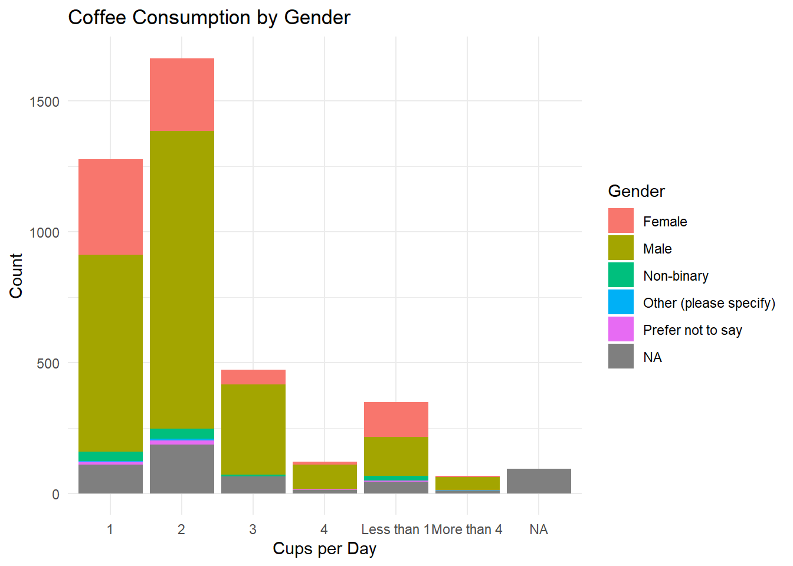
ggplot(coffee_survey, aes(x = cups, fill = gender)) +
geom_bar(position = "fill") + # stack bars by proportion
labs(title = "Coffee Consumption by Gender (Proportions)",
x = "Cups per Day", y = "Proportion") +
theme_minimal()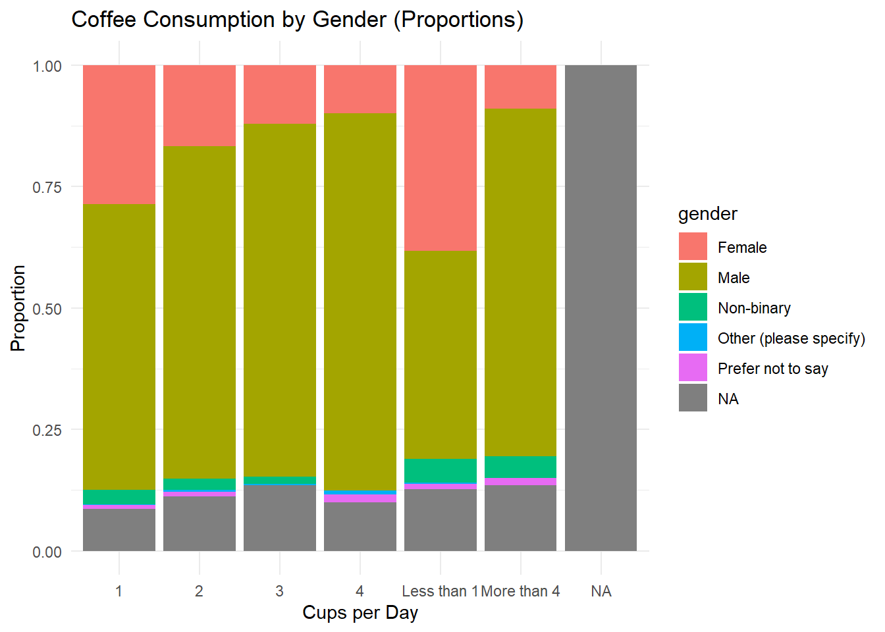
ggplot(coffee_survey, aes(x = cups)) +
geom_bar(fill = "steelblue") +
facet_wrap(~ gender) +
labs(title = "Cups of Coffee per Day by Gender",
x = "Cups per Day", y = "Count") +
theme_minimal()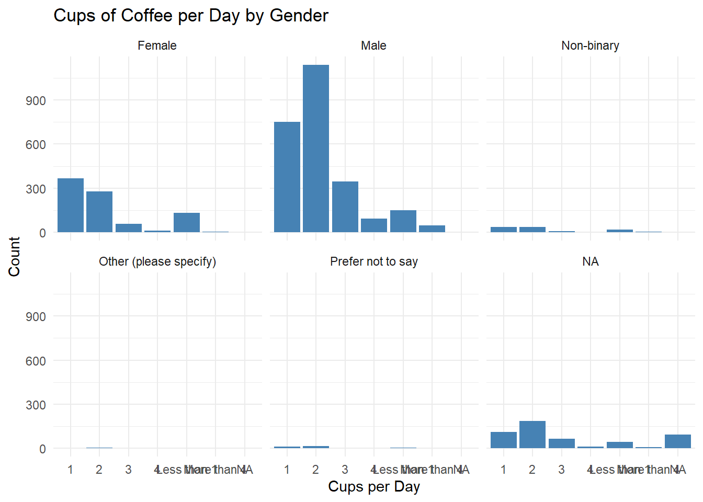
coffee_survey %>%
count(gender, cups) %>%
arrange(cups, gender)## # A tibble: 34 × 3
## gender cups n
## <chr> <chr> <int>
## 1 Female 1 366
## 2 Male 1 751
## 3 Non-binary 1 38
## 4 Other (please specify) 1 1
## 5 Prefer not to say 1 11
## 6 <NA> 1 110
## 7 Female 2 279
## 8 Male 2 1138
## 9 Non-binary 2 38
## 10 Other (please specify) 2 6
## # ℹ 24 more rowsbycups <- coffee_survey %>%
mutate(
cups_numeric = case_when(
cups == "Less than 1" ~ 0.5,
cups == "More than 4" ~ 5,
str_detect(cups, "^[0-9]+$") ~ as.numeric(cups),
TRUE ~ NA_real_
)
)## Warning: There was 1 warning in `mutate()`.
## ℹ In argument: `cups_numeric = case_when(...)`.
## Caused by warning:
## ! NAs introduced by coercionbycups %>%
group_by(gender) %>%
summarise(
average_cups = mean(cups_numeric, na.rm = TRUE),
n = n()
) %>%
arrange(desc(average_cups))## # A tibble: 6 × 3
## gender average_cups n
## <chr> <dbl> <int>
## 1 Other (please specify) 2.05 10
## 2 Male 1.88 2524
## 3 <NA> 1.86 519
## 4 Prefer not to say 1.70 33
## 5 Non-binary 1.54 103
## 6 Female 1.45 853It appears that a greater number of males tend to drink coffee than any other gender category. However, those who indicated “Other” as their gender tended to drink a greater number of cups than the other groups.
bycups %>%
group_by(employment_status) %>%
summarise(
average_cups = mean(cups_numeric, na.rm = TRUE),
n = n()
) %>%
arrange(desc(average_cups))## # A tibble: 7 × 3
## employment_status average_cups n
## <chr> <dbl> <int>
## 1 Retired 2.19 85
## 2 Employed full-time 1.82 2708
## 3 <NA> 1.81 623
## 4 Student 1.60 221
## 5 Employed part-time 1.50 201
## 6 Homemaker 1.47 78
## 7 Unemployed 1.44 126Those who are retired drink the greatest number of cups of coffee - which surprised me since I associate coffee with work and productivity. However, those who are employed full time make up the largest portion of the sample and drink roughly 1.82 cups of coffee a day on average.
bycups %>%
group_by(employment_status) %>%
summarise(average_cups = mean(cups_numeric, na.rm = TRUE)) %>%
ggplot(aes(x = reorder(employment_status, -average_cups), y = average_cups)) +
geom_bar(stat = "identity", fill = "lightblue") +
labs(title = "Average Cups per Day by Employment Status",
x = "Employment Status", y = "Average Cups per Day") +
theme_minimal() +
theme(axis.text.x = element_text(angle = 45, hjust = 1))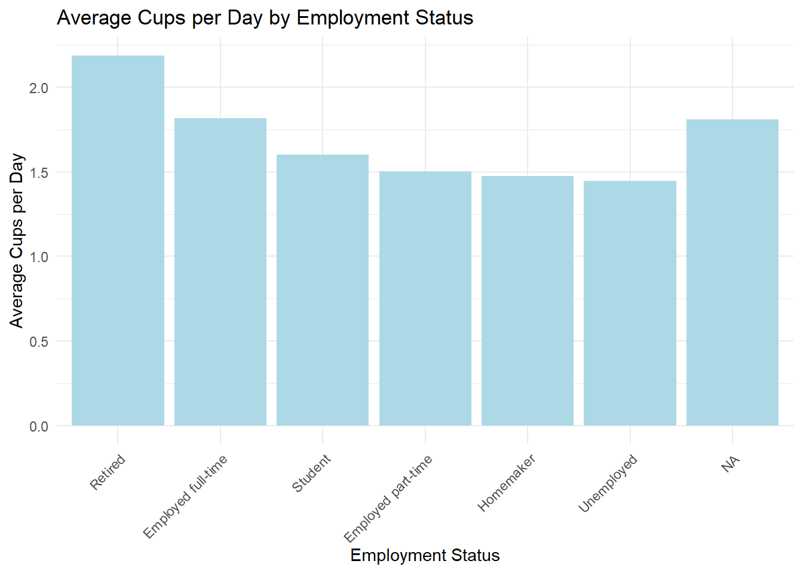
bycups %>%
group_by(education_level) %>%
summarise(
average_cups = mean(cups_numeric, na.rm = TRUE),
n = n()
) %>%
arrange(desc(average_cups))## # A tibble: 7 × 3
## education_level average_cups n
## <chr> <dbl> <int>
## 1 Doctorate or professional degree 1.92 340
## 2 High school graduate 1.85 118
## 3 Less than high school 1.84 22
## 4 <NA> 1.82 604
## 5 Master's degree 1.80 738
## 6 Some college or associate's degree 1.77 461
## 7 Bachelor's degree 1.72 1759The majority of individuals have a Bachelor’s degree - drinking on average 1.72 cups a coffee a day. Those with Doctorate or professional degrees drink the most coffee on average at 1.93 cups a day.
bycups %>%
group_by(education_level) %>%
summarise(average_cups = mean(cups_numeric, na.rm = TRUE)) %>%
ggplot(aes(x = reorder(education_level, -average_cups), y = average_cups)) +
geom_bar(stat = "identity", fill = "lightblue") +
labs(title = "Average Cups per Day by Education Level",
x = "Education Level", y = "Average Cups per Day") +
theme_minimal() +
theme(axis.text.x = element_text(angle = 45, hjust = 1))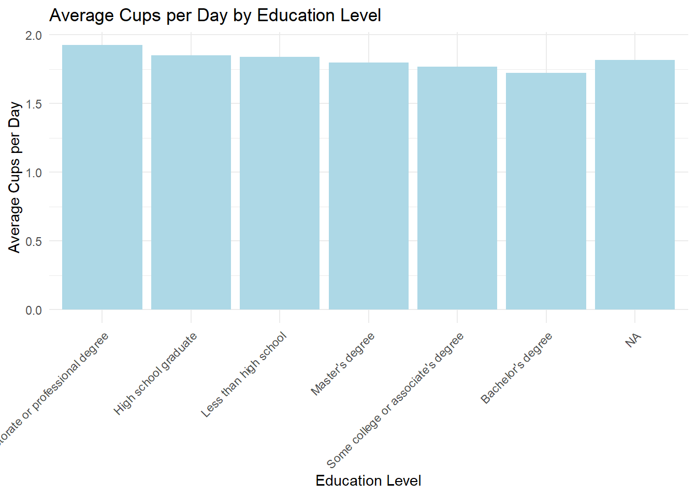
bycups %>%
group_by(number_children) %>%
summarise(
average_cups = mean(cups_numeric, na.rm = TRUE),
n = n()
) %>%
arrange(number_children)## # A tibble: 6 × 3
## number_children average_cups n
## <chr> <dbl> <int>
## 1 1 1.88 310
## 2 2 2.00 402
## 3 3 2.32 92
## 4 More than 3 2.24 52
## 5 None 1.69 2550
## 6 <NA> 1.82 636bycups %>%
group_by(number_children) %>%
summarise(average_cups = mean(cups_numeric, na.rm = TRUE)) %>%
ggplot(aes(x = factor(number_children), y = average_cups)) +
geom_bar(stat = "identity", fill = "lightblue") +
labs(title = "Average Cups per Day by Number of Children",
x = "Number of Children", y = "Average Cups per Day") +
theme_minimal()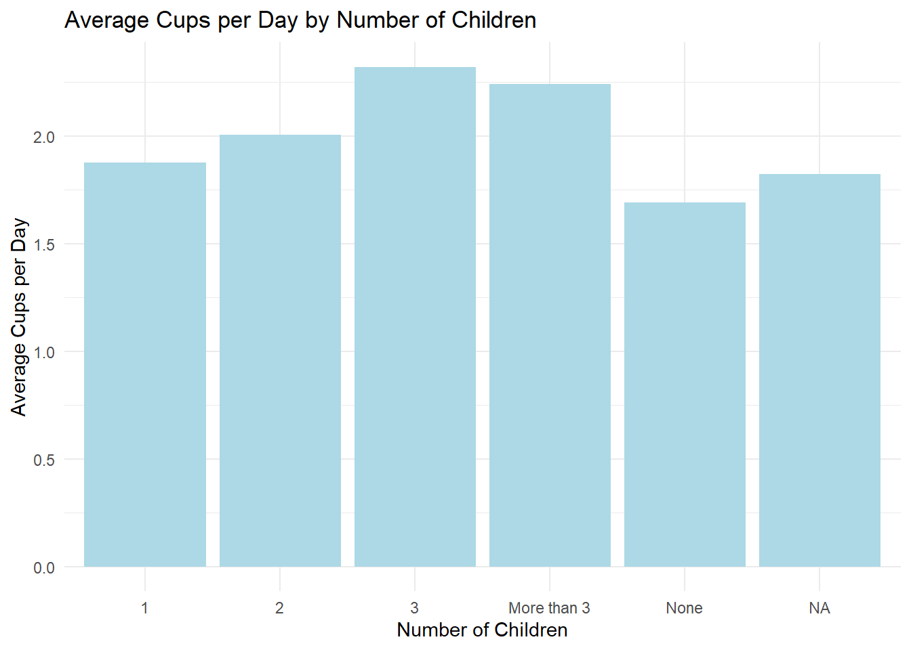
Looks like those who have 3 or more children are more likely to consume more coffee on average, as compared to those with fewer children.
bycups %>%
group_by(political_affiliation) %>%
summarise(
average_cups = mean(cups_numeric, na.rm = TRUE),
n = n()
) %>%
arrange(desc(average_cups))## # A tibble: 5 × 3
## political_affiliation average_cups n
## <chr> <dbl> <int>
## 1 Republican 1.90 188
## 2 Independent 1.85 507
## 3 <NA> 1.79 753
## 4 No affiliation 1.77 826
## 5 Democrat 1.74 1768bycups %>%
group_by(political_affiliation) %>%
summarise(average_cups = mean(cups_numeric, na.rm = TRUE)) %>%
ggplot(aes(x = reorder(political_affiliation, -average_cups), y = average_cups)) +
geom_bar(stat = "identity", fill = "lightblue") +
labs(title = "Average Cups per Day by Political Affiliation",
x = "Political Affiliation", y = "Average Cups per Day") +
theme_minimal() +
theme(axis.text.x = element_text(angle = 45, hjust = 1))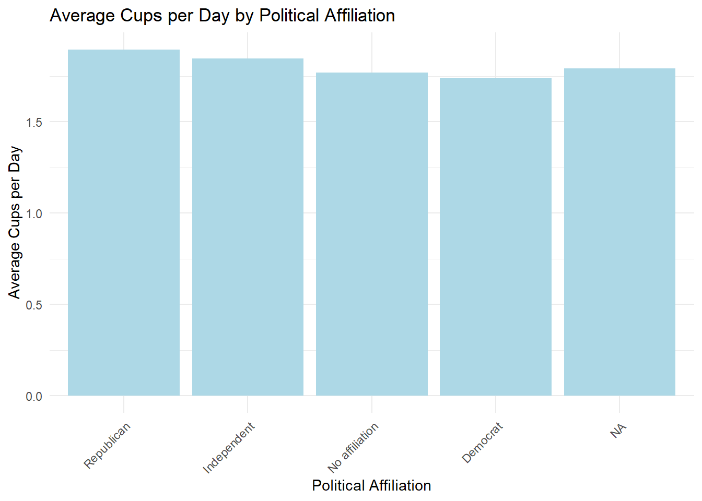
It looks like Republicans and Independents drink roughly the same amount of coffee. Democrats tend to drink slightly less coffee.
bycups %>%
group_by(ethnicity_race) %>%
summarise(
average_cups = mean(cups_numeric, na.rm = TRUE),
n = n()
) %>%
arrange(desc(average_cups))## # A tibble: 7 × 3
## ethnicity_race average_cups n
## <chr> <dbl> <int>
## 1 Native American/Alaska Native 2.15 13
## 2 <NA> 1.83 624
## 3 White/Caucasian 1.81 2626
## 4 Other (please specify) 1.75 111
## 5 Hispanic/Latino 1.72 218
## 6 Black/African American 1.62 39
## 7 Asian/Pacific Islander 1.50 411bycups %>%
group_by(ethnicity_race) %>%
summarise(average_cups = mean(cups_numeric, na.rm = TRUE)) %>%
ggplot(aes(x = reorder(ethnicity_race, -average_cups), y = average_cups)) +
geom_bar(stat = "identity", fill = "lightblue") +
labs(title = "Average Cups per Day by Ethnicity",
x = "Ethnicity", y = "Average Cups per Day") +
theme_minimal() +
theme(axis.text.x = element_text(angle = 45, hjust = 1))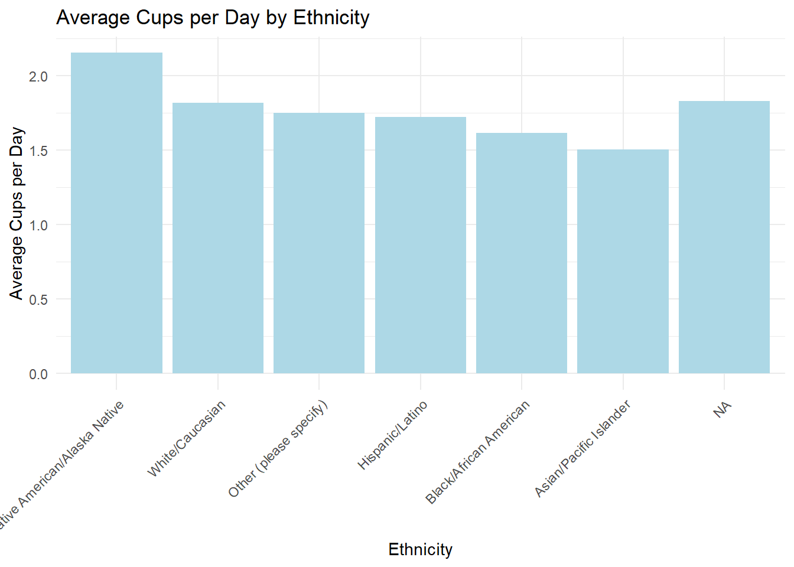 Native American/Alaska Native individuals tend to drink the most cups of coffee on average!
coffee_survey %>%
count(prefer_overall) %>%
ggplot(aes(x = prefer_overall, y = n, fill = prefer_overall)) +
geom_bar(stat = "identity") +
labs(title = "Most Preferred Coffee (Overall Taste)",
x = "Coffee Sample", y = "Number of People") +
theme_minimal() +
theme(legend.position = "none")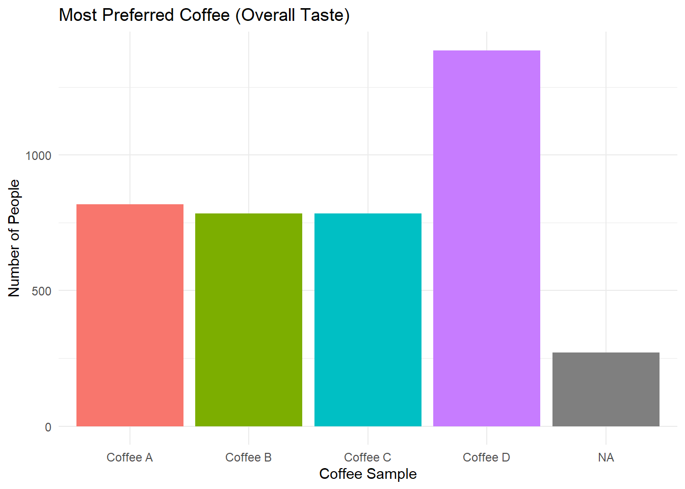 The sample far preferred Coffee D - now I want to try the coffees…
# Prepare data
coffee_long <- coffee_survey %>%
summarise(
A_bit = mean(coffee_a_bitterness, na.rm = TRUE),
A_acid = mean(coffee_a_acidity, na.rm = TRUE),
A_pref = mean(coffee_a_personal_preference, na.rm = TRUE),
B_bit = mean(coffee_b_bitterness, na.rm = TRUE),
B_acid = mean(coffee_b_acidity, na.rm = TRUE),
B_pref = mean(coffee_b_personal_preference, na.rm = TRUE),
C_bit = mean(coffee_c_bitterness, na.rm = TRUE),
C_acid = mean(coffee_c_acidity, na.rm = TRUE),
C_pref = mean(coffee_c_personal_preference, na.rm = TRUE),
D_bit = mean(coffee_d_bitterness, na.rm = TRUE),
D_acid = mean(coffee_d_acidity, na.rm = TRUE),
D_pref = mean(coffee_d_personal_preference, na.rm = TRUE)
) %>%
pivot_longer(cols = everything(), names_to = "coffee_attr", values_to = "rating") %>%
separate(coffee_attr, into = c("coffee", "attribute"), sep = "_")ggplot(coffee_long, aes(x = attribute, y = rating, fill = coffee)) +
geom_bar(stat = "identity", position = "dodge") +
labs(title = "Average Ratings for Each Coffee Sample",
x = "Attribute", y = "Average Rating") +
theme_minimal()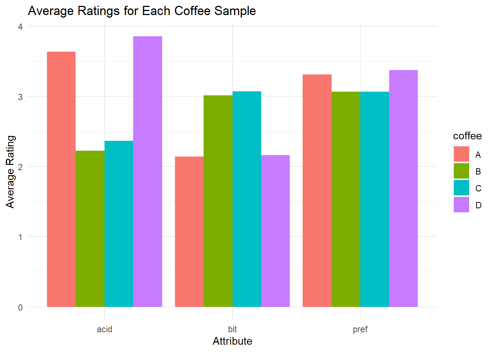 Coffee D - the preferred coffee - is the most acidic and not particularly bitter. Coffee D and A have similar ratings although as seen above, more people preferred coffee D.
ggplot(coffee_long, aes(x = attribute, y = rating, fill = attribute)) +
geom_col() +
facet_wrap(~ coffee) +
labs(title = "Attribute Ratings per Coffee Sample",
x = "Attribute", y = "Average Rating") +
theme_minimal()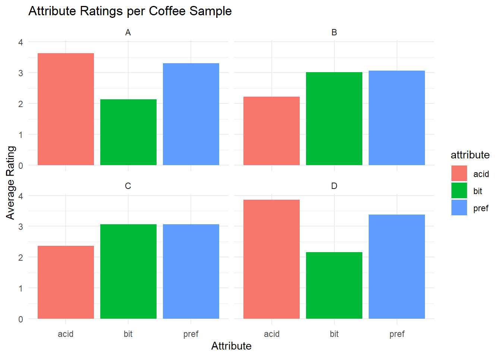
Here is a profile of each coffee: A and D are similar in Acidity and Bitterness C and B are similar in Acidity and Bitterness
demo_model <- multinom(prefer_overall ~ gender + employment_status + education_level +
political_affiliation + ethnicity_race + number_children,
data = coffee_survey)## # weights: 112 (81 variable)
## initial value 4513.774440
## iter 10 value 4314.922604
## iter 20 value 4297.469000
## iter 30 value 4282.377458
## iter 40 value 4280.715906
## iter 50 value 4280.661718
## iter 60 value 4280.659517
## iter 60 value 4280.659485
## iter 60 value 4280.659477
## final value 4280.659477
## convergedsummary(demo_model)## Call:
## multinom(formula = prefer_overall ~ gender + employment_status +
## education_level + political_affiliation + ethnicity_race +
## number_children, data = coffee_survey)
##
## Coefficients:
## (Intercept) genderMale genderNon-binary genderOther (please specify)
## Coffee B 0.3943998 -0.4717267 -0.230071044 -0.3389302
## Coffee C 0.2849466 -0.4607120 0.007582611 -1.0130577
## Coffee D 0.2905672 0.4485637 0.586262316 0.6832423
## genderPrefer not to say employment_statusEmployed part-time
## Coffee B -1.08038279 -0.03473807
## Coffee C 0.27300784 0.03144563
## Coffee D 0.07414773 -0.11156097
## employment_statusHomemaker employment_statusRetired
## Coffee B 0.6456831 0.3561797
## Coffee C 0.1822438 -0.1086493
## Coffee D 0.1491570 -0.6812920
## employment_statusStudent employment_statusUnemployed
## Coffee B -0.2498950 -0.42631794
## Coffee C -0.3893695 -0.08546336
## Coffee D -0.2716105 -0.28355787
## education_levelDoctorate or professional degree
## Coffee B -0.44829729
## Coffee C -0.02006993
## Coffee D -0.04858344
## education_levelHigh school graduate
## Coffee B 0.33333987
## Coffee C 0.66633256
## Coffee D -0.04470017
## education_levelLess than high school education_levelMaster's degree
## Coffee B -0.38174940 -0.176465151
## Coffee C -0.07463695 -0.009361598
## Coffee D -0.37116465 -0.124433954
## education_levelSome college or associate's degree
## Coffee B 0.2545311
## Coffee C 0.1448767
## Coffee D 0.1089293
## political_affiliationIndependent political_affiliationNo affiliation
## Coffee B 0.01776505 0.005551381
## Coffee C 0.10074633 0.037846616
## Coffee D -0.19247952 -0.212863000
## political_affiliationRepublican ethnicity_raceBlack/African American
## Coffee B 0.6598620 -0.02172933
## Coffee C 0.6313812 0.65399869
## Coffee D 0.2587480 0.05493801
## ethnicity_raceHispanic/Latino
## Coffee B 0.22456537
## Coffee C 0.27662057
## Coffee D 0.08055177
## ethnicity_raceNative American/Alaska Native
## Coffee B -0.4947540
## Coffee C 0.1396629
## Coffee D -0.3168603
## ethnicity_raceOther (please specify) ethnicity_raceWhite/Caucasian
## Coffee B 0.3015015 -0.1162131
## Coffee C 0.5513425 0.1214164
## Coffee D 0.2000544 0.1868422
## number_children2 number_children3 number_childrenMore than 3
## Coffee B -0.1427173 -0.3518150 -0.1761735
## Coffee C -0.2620544 -0.6152653 -0.6428779
## Coffee D -0.2692913 -0.6663839 -0.8361571
## number_childrenNone
## Coffee B -0.05791968
## Coffee C -0.27416872
## Coffee D -0.08268391
##
## Std. Errors:
## (Intercept) genderMale genderNon-binary genderOther (please specify)
## Coffee B 0.2772286 0.1285953 0.3535393 1.0231466
## Coffee C 0.2761539 0.1287798 0.3392188 1.2429293
## Coffee D 0.2483882 0.1232596 0.3055504 0.8900163
## genderPrefer not to say employment_statusEmployed part-time
## Coffee B 0.8812211 0.2329844
## Coffee C 0.6467496 0.2296843
## Coffee D 0.6867791 0.2111132
## employment_statusHomemaker employment_statusRetired
## Coffee B 0.3824997 0.3320339
## Coffee C 0.4054804 0.3583207
## Coffee D 0.4052916 0.3605065
## employment_statusStudent employment_statusUnemployed
## Coffee B 0.2211356 0.2996325
## Coffee C 0.2297260 0.2769382
## Coffee D 0.1886628 0.2496721
## education_levelDoctorate or professional degree
## Coffee B 0.2025877
## Coffee C 0.1874046
## Coffee D 0.1601449
## education_levelHigh school graduate
## Coffee B 0.3193051
## Coffee C 0.3032941
## Coffee D 0.3009423
## education_levelLess than high school education_levelMaster's degree
## Coffee B 0.6695380 0.1413029
## Coffee C 0.6283941 0.1398332
## Coffee D 0.5738280 0.1220294
## education_levelSome college or associate's degree
## Coffee B 0.1692567
## Coffee C 0.1754590
## Coffee D 0.1519325
## political_affiliationIndependent political_affiliationNo affiliation
## Coffee B 0.1580327 0.1324961
## Coffee C 0.1562869 0.1325595
## Coffee D 0.1373271 0.1156893
## political_affiliationRepublican ethnicity_raceBlack/African American
## Coffee B 0.2564836 0.5665727
## Coffee C 0.2598577 0.5206134
## Coffee D 0.2407668 0.5203709
## ethnicity_raceHispanic/Latino
## Coffee B 0.2598373
## Coffee C 0.2703287
## Coffee D 0.2401684
## ethnicity_raceNative American/Alaska Native
## Coffee B 0.9443127
## Coffee C 0.8458862
## Coffee D 0.8395086
## ethnicity_raceOther (please specify) ethnicity_raceWhite/Caucasian
## Coffee B 0.3475079 0.1679742
## Coffee C 0.3456165 0.1743370
## Coffee D 0.3202470 0.1494897
## number_children2 number_children3 number_childrenMore than 3
## Coffee B 0.2481985 0.3692895 0.4402322
## Coffee C 0.2401449 0.3678940 0.4699750
## Coffee D 0.2169601 0.3370448 0.4404974
## number_childrenNone
## Coffee B 0.2041816
## Coffee C 0.1960422
## Coffee D 0.1762088
##
## Residual Deviance: 8561.319
## AIC: 8723.319Employment, ethnicity, number of children – strongest predictors Gender and edu are not strong predictors
Model overall does not do well (high AIC/deviance)
library(nnet)
coffee_survey <- coffee_survey %>%
mutate(prefer_overall = factor(prefer_overall))coffee_model <- multinom(prefer_overall ~
coffee_a_bitterness + coffee_a_acidity + coffee_a_personal_preference +
coffee_b_bitterness + coffee_b_acidity + coffee_b_personal_preference +
coffee_c_bitterness + coffee_c_acidity + coffee_c_personal_preference +
coffee_d_bitterness + coffee_d_acidity + coffee_d_personal_preference,
data = coffee_survey)## # weights: 56 (39 variable)
## initial value 5136.220608
## iter 10 value 2458.112796
## iter 20 value 2343.446273
## iter 30 value 2294.524810
## iter 40 value 2263.237279
## iter 50 value 2257.262700
## final value 2257.262624
## convergedsummary(coffee_model)## Call:
## multinom(formula = prefer_overall ~ coffee_a_bitterness + coffee_a_acidity +
## coffee_a_personal_preference + coffee_b_bitterness + coffee_b_acidity +
## coffee_b_personal_preference + coffee_c_bitterness + coffee_c_acidity +
## coffee_c_personal_preference + coffee_d_bitterness + coffee_d_acidity +
## coffee_d_personal_preference, data = coffee_survey)
##
## Coefficients:
## (Intercept) coffee_a_bitterness coffee_a_acidity
## Coffee B 1.283848 0.085735353 0.05469646
## Coffee C 0.452998 0.009512007 -0.01207903
## Coffee D 1.032948 -0.021463000 -0.04784295
## coffee_a_personal_preference coffee_b_bitterness coffee_b_acidity
## Coffee B -2.084153 -0.02767210 -0.11823276
## Coffee C -2.054378 -0.08893206 0.11556237
## Coffee D -2.100518 -0.03108793 0.02953591
## coffee_b_personal_preference coffee_c_bitterness coffee_c_acidity
## Coffee B 1.80199626 -0.13364971 -0.009578954
## Coffee C -0.02083055 0.09004299 -0.105323800
## Coffee D 0.05110277 -0.13428252 -0.007626577
## coffee_c_personal_preference coffee_d_bitterness coffee_d_acidity
## Coffee B 0.01842648 0.03513596 -0.03070310
## Coffee C 1.76131479 0.03101448 0.06391267
## Coffee D 0.16761791 -0.03778605 0.07381603
## coffee_d_personal_preference
## Coffee B 0.1331768
## Coffee C 0.2706037
## Coffee D 1.9287377
##
## Std. Errors:
## (Intercept) coffee_a_bitterness coffee_a_acidity
## Coffee B 0.7069408 0.08771089 0.08247733
## Coffee C 0.7027209 0.08617734 0.08094733
## Coffee D 0.6336670 0.08062061 0.07274685
## coffee_a_personal_preference coffee_b_bitterness coffee_b_acidity
## Coffee B 0.09585503 0.08465085 0.09362516
## Coffee C 0.09461917 0.07982937 0.08860347
## Coffee D 0.09066087 0.07077912 0.07914362
## coffee_b_personal_preference coffee_c_bitterness coffee_c_acidity
## Coffee B 0.09137579 0.08098651 0.08408069
## Coffee C 0.08185997 0.08208871 0.08575750
## Coffee D 0.07228281 0.07082802 0.07518905
## coffee_c_personal_preference coffee_d_bitterness coffee_d_acidity
## Coffee B 0.08221223 0.07299430 0.07631315
## Coffee C 0.08784440 0.07303519 0.07631968
## Coffee D 0.07169025 0.07045121 0.06955748
## coffee_d_personal_preference
## Coffee B 0.06827656
## Coffee C 0.06744419
## Coffee D 0.07790629
##
## Residual Deviance: 4514.525
## AIC: 4592.525People prefer coffees that fit personal preference (not surprising) with bitterness and acidity less important in predictions Each coeff shows that a 1-unit increase in that variable affects the log-odds of someone preferring Coffee B, C, or D instead of Coffee A.
coffee_modelb <- multinom(prefer_overall ~
coffee_a_bitterness + coffee_a_acidity +
coffee_b_bitterness + coffee_b_acidity +
coffee_c_bitterness + coffee_c_acidity +
coffee_d_bitterness + coffee_d_acidity,
data = coffee_survey)## # weights: 40 (27 variable)
## initial value 5155.628729
## iter 10 value 4833.960090
## iter 20 value 4816.127348
## iter 30 value 4809.376681
## final value 4808.949066
## convergedsummary(coffee_modelb)## Call:
## multinom(formula = prefer_overall ~ coffee_a_bitterness + coffee_a_acidity +
## coffee_b_bitterness + coffee_b_acidity + coffee_c_bitterness +
## coffee_c_acidity + coffee_d_bitterness + coffee_d_acidity,
## data = coffee_survey)
##
## Coefficients:
## (Intercept) coffee_a_bitterness coffee_a_acidity coffee_b_bitterness
## Coffee B -0.6015430 0.3344683 0.1957036 -0.320594087
## Coffee C -0.8641549 0.3072809 0.2055851 -0.228802974
## Coffee D 0.9680650 0.2173609 0.1049716 -0.003849958
## coffee_b_acidity coffee_c_bitterness coffee_c_acidity
## Coffee B -0.12147797 -0.1716252 0.139095737
## Coffee C 0.28082951 -0.3229864 0.004751736
## Coffee D -0.01303085 -0.0698393 0.059629056
## coffee_d_bitterness coffee_d_acidity
## Coffee B 0.11054665 0.08067443
## Coffee C 0.08012149 0.06490197
## Coffee D -0.39018134 -0.08850739
##
## Std. Errors:
## (Intercept) coffee_a_bitterness coffee_a_acidity coffee_b_bitterness
## Coffee B 0.3794746 0.05786981 0.05392103 0.05445089
## Coffee C 0.3831877 0.05791776 0.05421261 0.05488305
## Coffee D 0.3325934 0.05346851 0.04784244 0.04858802
## coffee_b_acidity coffee_c_bitterness coffee_c_acidity
## Coffee B 0.06244422 0.05339882 0.05782477
## Coffee C 0.06121674 0.05368218 0.05824178
## Coffee D 0.05501348 0.04749336 0.05161747
## coffee_d_bitterness coffee_d_acidity
## Coffee B 0.04794592 0.05299702
## Coffee C 0.04819853 0.05274103
## Coffee D 0.04619853 0.04643604
##
## Residual Deviance: 9617.898
## AIC: 9671.898This model preforms much worse than the other model with personal preference - suggesting that bitterness and acidity don’t do a good job of predicting.
Suggests: - personal preference is more important and that bitterness and acidity aren’t necessarily important for choosing fav coffee - high bitterness of coffee A pushes people towards the other 3 coffees - specifically D
coffee_survey %>%
count(prefer_overall) %>%
arrange(desc(n))## # A tibble: 5 × 2
## prefer_overall n
## <fct> <int>
## 1 Coffee D 1385
## 2 Coffee A 818
## 3 Coffee C 784
## 4 Coffee B 783
## 5 <NA> 272full_model <- multinom(prefer_overall ~
coffee_a_bitterness + coffee_a_acidity + coffee_a_personal_preference +
coffee_b_bitterness + coffee_b_acidity + coffee_b_personal_preference +
coffee_c_bitterness + coffee_c_acidity + coffee_c_personal_preference +
coffee_d_bitterness + coffee_d_acidity + coffee_d_personal_preference +
gender + employment_status + education_level + number_children +
political_affiliation + ethnicity_race,
data = coffee_survey)## # weights: 160 (117 variable)
## initial value 4513.774440
## iter 10 value 2259.262723
## iter 20 value 2169.653846
## iter 30 value 2006.061482
## iter 40 value 1957.824326
## iter 50 value 1934.940738
## iter 60 value 1932.354471
## iter 70 value 1931.764643
## iter 80 value 1931.630763
## iter 90 value 1931.627104
## final value 1931.626899
## convergedsummary(full_model)## Call:
## multinom(formula = prefer_overall ~ coffee_a_bitterness + coffee_a_acidity +
## coffee_a_personal_preference + coffee_b_bitterness + coffee_b_acidity +
## coffee_b_personal_preference + coffee_c_bitterness + coffee_c_acidity +
## coffee_c_personal_preference + coffee_d_bitterness + coffee_d_acidity +
## coffee_d_personal_preference + gender + employment_status +
## education_level + number_children + political_affiliation +
## ethnicity_race, data = coffee_survey)
##
## Coefficients:
## (Intercept) coffee_a_bitterness coffee_a_acidity
## Coffee B 1.0619124 0.08851453 0.076727949
## Coffee C 0.1137309 0.01709817 -0.008190678
## Coffee D 1.1057098 -0.01310385 -0.057408900
## coffee_a_personal_preference coffee_b_bitterness coffee_b_acidity
## Coffee B -2.137811 -0.03279206 -0.10800670
## Coffee C -2.086832 -0.08492881 0.17048707
## Coffee D -2.186942 -0.06224815 0.08461311
## coffee_b_personal_preference coffee_c_bitterness coffee_c_acidity
## Coffee B 1.864814596 -0.1195761 -0.0833412
## Coffee C 0.003886958 0.1086398 -0.1012238
## Coffee D 0.041106197 -0.1069948 -0.0145764
## coffee_c_personal_preference coffee_d_bitterness coffee_d_acidity
## Coffee B 0.03609311 0.009661373 -0.03304911
## Coffee C 1.75244062 0.038821409 0.06268520
## Coffee D 0.16323556 -0.043061374 0.09953951
## coffee_d_personal_preference genderMale genderNon-binary
## Coffee B 0.1320773 -0.01784281 0.2180369
## Coffee C 0.2477954 0.03896059 0.4138005
## Coffee D 1.9709579 0.14816502 -0.1683189
## genderOther (please specify) genderPrefer not to say
## Coffee B 0.4613306 -0.1282517
## Coffee C -0.3655026 1.4144706
## Coffee D 0.3971414 -0.6366020
## employment_statusEmployed part-time employment_statusHomemaker
## Coffee B -0.5519276 1.0073896
## Coffee C -0.5515596 0.7644375
## Coffee D -0.2296034 -0.2793227
## employment_statusRetired employment_statusStudent
## Coffee B 0.7343714 -0.21816137
## Coffee C -0.1193545 -0.32808174
## Coffee D 0.4076214 -0.04467392
## employment_statusUnemployed
## Coffee B -0.9459257
## Coffee C -0.4499824
## Coffee D -0.3530572
## education_levelDoctorate or professional degree
## Coffee B -0.29617362
## Coffee C -0.03936792
## Coffee D -0.03847169
## education_levelHigh school graduate
## Coffee B 0.3770934
## Coffee C 0.2921241
## Coffee D -0.2888370
## education_levelLess than high school education_levelMaster's degree
## Coffee B 0.45211035 -0.06839539
## Coffee C -0.08617636 0.06246839
## Coffee D -0.55454891 -0.14340013
## education_levelSome college or associate's degree number_children2
## Coffee B 0.23778104 -0.21902858
## Coffee C -0.09948776 -0.49184220
## Coffee D 0.14425210 0.03602419
## number_children3 number_childrenMore than 3 number_childrenNone
## Coffee B 0.03418231 -0.37247880 0.17571800
## Coffee C -0.51388741 -0.49964271 -0.06674994
## Coffee D -0.26398324 -0.09573278 -0.06829674
## political_affiliationIndependent political_affiliationNo affiliation
## Coffee B -0.3090742 -0.1953364
## Coffee C -0.1811393 -0.1288983
## Coffee D -0.3283001 -0.3053654
## political_affiliationRepublican ethnicity_raceBlack/African American
## Coffee B 0.04400489 1.2589417
## Coffee C 0.17395010 1.3051485
## Coffee D 0.01445226 0.3388819
## ethnicity_raceHispanic/Latino
## Coffee B 0.4946351
## Coffee C 0.5435861
## Coffee D 0.1922529
## ethnicity_raceNative American/Alaska Native
## Coffee B -1.738794
## Coffee C -1.870747
## Coffee D -1.131432
## ethnicity_raceOther (please specify) ethnicity_raceWhite/Caucasian
## Coffee B 1.2184021 0.2581756
## Coffee C 1.1558293 0.5024549
## Coffee D 0.2500419 0.1293920
##
## Std. Errors:
## (Intercept) coffee_a_bitterness coffee_a_acidity
## Coffee B 0.8773736 0.09610761 0.09208045
## Coffee C 0.8649531 0.09359784 0.08994397
## Coffee D 0.7693799 0.08689279 0.08006356
## coffee_a_personal_preference coffee_b_bitterness coffee_b_acidity
## Coffee B 0.10558695 0.09288798 0.10356483
## Coffee C 0.10365159 0.08616620 0.09686356
## Coffee D 0.09962723 0.07673779 0.08624944
## coffee_b_personal_preference coffee_c_bitterness coffee_c_acidity
## Coffee B 0.10169472 0.08891993 0.09267133
## Coffee C 0.08953183 0.08902749 0.09331216
## Coffee D 0.07951086 0.07616373 0.08217267
## coffee_c_personal_preference coffee_d_bitterness coffee_d_acidity
## Coffee B 0.08983842 0.08044637 0.08527251
## Coffee C 0.09466616 0.07982465 0.08305836
## Coffee D 0.07733222 0.07766336 0.07569261
## coffee_d_personal_preference genderMale genderNon-binary
## Coffee B 0.07638555 0.2036279 0.5122657
## Coffee C 0.07453980 0.2005620 0.5034650
## Coffee D 0.08603579 0.1898069 0.4386011
## genderOther (please specify) genderPrefer not to say
## Coffee B 1.566540 1.351400
## Coffee C 1.924562 1.343868
## Coffee D 1.351295 1.097222
## employment_statusEmployed part-time employment_statusHomemaker
## Coffee B 0.3565721 0.5537070
## Coffee C 0.3445343 0.5907198
## Coffee D 0.3087973 0.6046598
## employment_statusRetired employment_statusStudent
## Coffee B 0.5077274 0.3642575
## Coffee C 0.5317231 0.3498630
## Coffee D 0.5554562 0.2815875
## employment_statusUnemployed
## Coffee B 0.4129583
## Coffee C 0.4066988
## Coffee D 0.3747978
## education_levelDoctorate or professional degree
## Coffee B 0.3171422
## Coffee C 0.2820833
## Coffee D 0.2362354
## education_levelHigh school graduate
## Coffee B 0.4362307
## Coffee C 0.4317986
## Coffee D 0.4241331
## education_levelLess than high school education_levelMaster's degree
## Coffee B 0.9305304 0.2168031
## Coffee C 0.9100324 0.2108336
## Coffee D 0.8687134 0.1794463
## education_levelSome college or associate's degree number_children2
## Coffee B 0.2618457 0.3822096
## Coffee C 0.2622667 0.3656588
## Coffee D 0.2271656 0.3159834
## number_children3 number_childrenMore than 3 number_childrenNone
## Coffee B 0.5392408 0.6891163 0.3144770
## Coffee C 0.5301545 0.7287081 0.2964769
## Coffee D 0.5213677 0.6879430 0.2491441
## political_affiliationIndependent political_affiliationNo affiliation
## Coffee B 0.2397881 0.2024937
## Coffee C 0.2377099 0.1978407
## Coffee D 0.2046510 0.1677394
## political_affiliationRepublican ethnicity_raceBlack/African American
## Coffee B 0.3810920 0.8409328
## Coffee C 0.3780393 0.8205255
## Coffee D 0.3494861 0.7792561
## ethnicity_raceHispanic/Latino
## Coffee B 0.4102446
## Coffee C 0.4183491
## Coffee D 0.3519590
## ethnicity_raceNative American/Alaska Native
## Coffee B 1.144129
## Coffee C 1.133886
## Coffee D 1.245275
## ethnicity_raceOther (please specify) ethnicity_raceWhite/Caucasian
## Coffee B 0.5091831 0.2599171
## Coffee C 0.5398132 0.2655209
## Coffee D 0.4761038 0.2224989
##
## Residual Deviance: 3863.254
## AIC: 4097.254Compared to Coffee A …
The strongest predictor was personal preference ratings for each coffee
Demographics – ethnicity, number of children, and employment type are moderate predictors
Gender – gender (except prefer not to say), acidity, bitterness were weak predictors
Notable effects: - personal preference is still the most important - beyond “prefer not to say” there are small gender effects - those who are retired are more likely to choose coffee B, students are less likely to choose B, and homemakers are more likely to choose C compared to A - those with lower levels of edu were more likely to choose B or C where those with doctorate and masters are less likely to choose those compared to A - those with 3 + children are less likely to choose C or D - Republicans and independents are more likely to choose B/C and B, respectively - Hispanic/latino (strongly likely to choose B and C, over A); Black (less likely to prefer coffees B, C, D, over A); white (slightly less likely to choose C and D over A)
Full little Tidy Tues dataset exploration :)